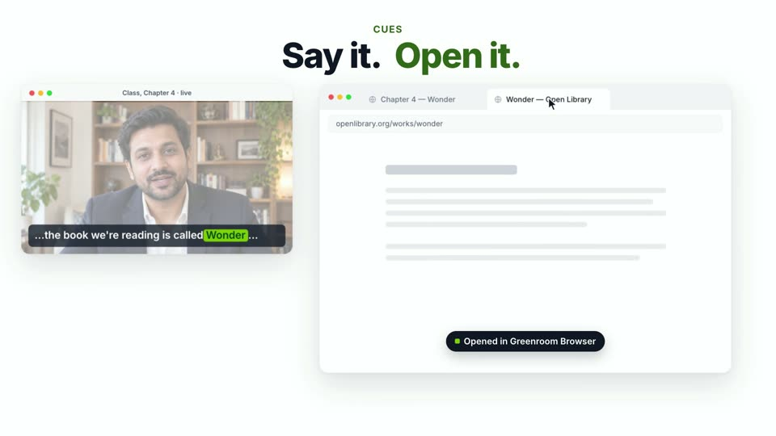
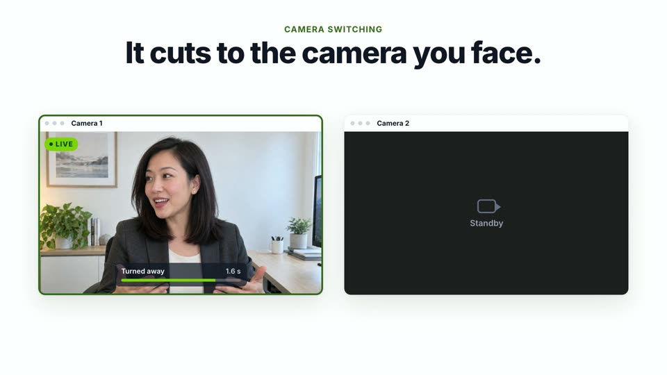
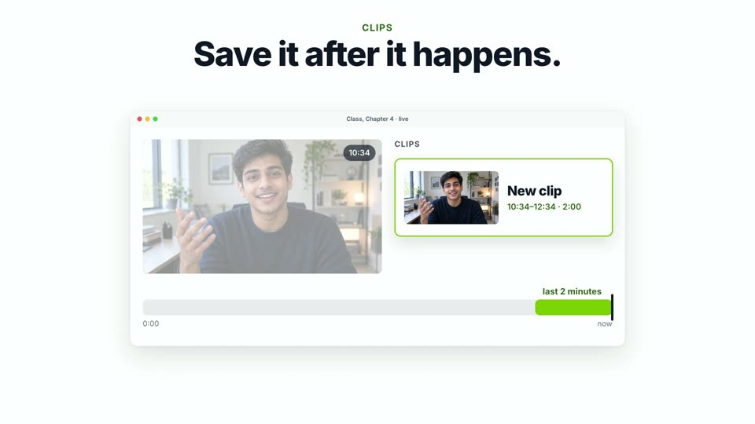
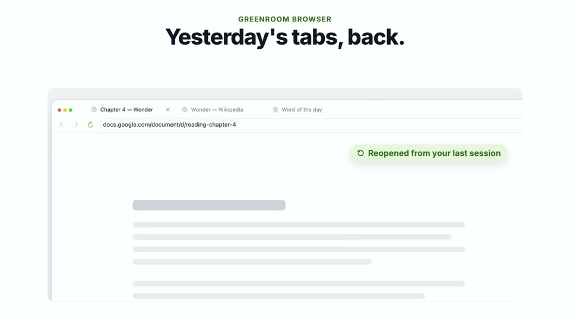
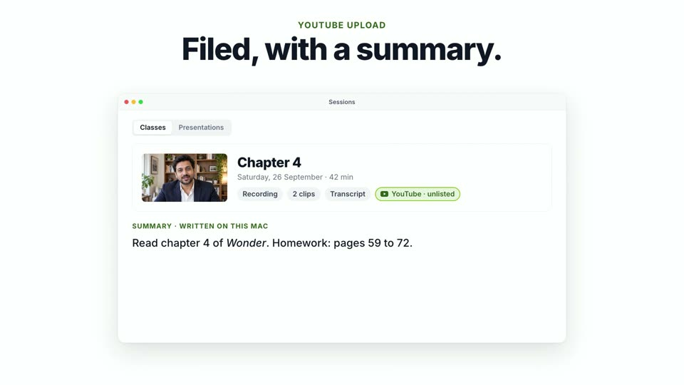
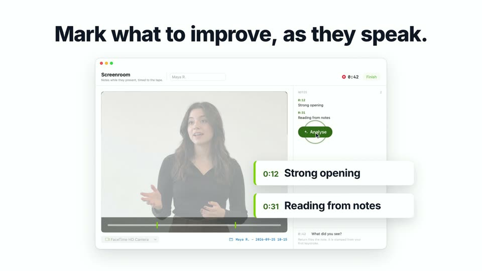
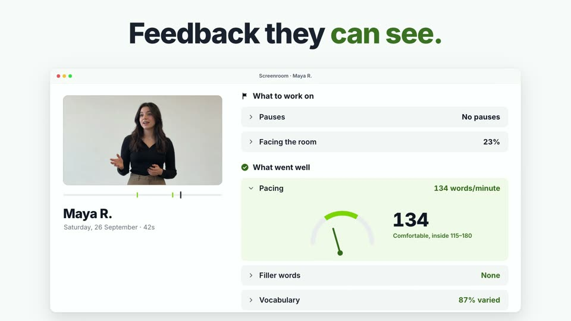
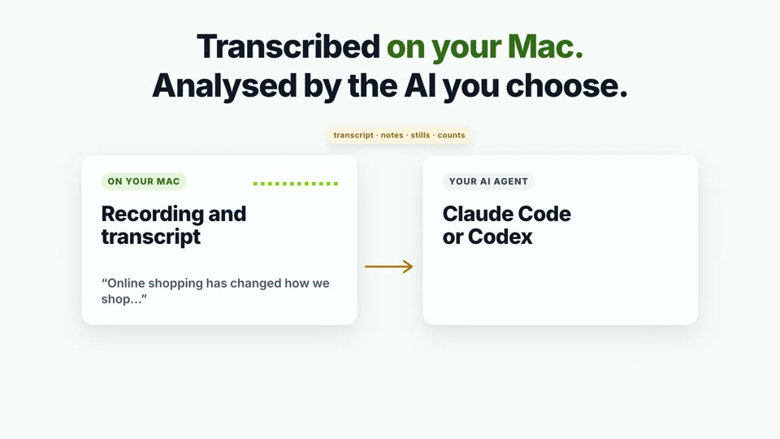

Start still sets up the whole class: the camera, the Zoom meeting, and every window in its place. Greenroom 1.0 is about what happens after the click. It finds the link while you are still talking, follows your face from screen to screen, saves the moment nobody was recording, and, in Screenroom, turns a student's talk into feedback they can see.
Free and open source, for macOS 14 or later. Already have it? Menu bar → Check for Updates…
Everything here runs while you teach, and none of it needs you to stop and click.

Name a book, a video, a place or a person while you teach, and a card is waiting on your reference display. Open puts it in the reading window without leaving the page; Send drops the link in the class chat. It hears a thing however you name it (“the book, Wonder”, “have you heard of…”) and searches for what you meant.
It listens with Apple's speech model, or with whisper, which is better at names. whisper now sets itself up from Settings with one button. The links you used are kept with the class, in a Links tab in Sessions.
Off by default. Needs macOS 26. Only the short search phrase leaves the Mac.

Two monitors, a camera on each; an iPhone can be one of them. Every chosen camera stays open, and the class gets whichever one sees your face most head-on, once it has been clearly better for about a second. Pick a hard cut or a short crossfade.
It reads which way your head points, not your eyes, so looking down at your notes switches nothing. A bar over your self view fills while it waits; the class never sees it.
Off by default. Runs on the Mac with Apple's Vision.

The best moments aren't planned. Press ⌥⌘1, ⌥⌘2 or ⌥⌘5 and the last one, two or five minutes become a clip, even if you weren't recording. The last five minutes of the class are held in memory and written to disk only when you ask.

Pick Greenroom Browser as the main app and the reading page opens in a window Greenroom tiles itself, beside the Zoom tile and the chat. The tabs you had last session come back on the next Start. Because Greenroom owns the window, it needs no Accessibility permission to place it.

Connect your channel and a finished recording can upload itself, unlisted or private, with the link on your clipboard when it lands. Every class is kept in Sessions with its recording, clips, transcript and links.
With a Cues transcript, one click writes a summary of the class on this Mac with Apple's on-device model.
YouTube needs a Google Cloud client of your own, once; the guide walks through it. Summaries need macOS 26 with Apple Intelligence on.
Greenroom is the room you wait in before you go on. Screenroom is where you watch it back. It is for when a student presents: record their talk, mark it as they speak, and hand them a report they can see. It needs no meeting, no OBS and no Zoom account.

A camera and a microphone, or a screen or window for a student presenting remotely. Type a note while they talk: it is stamped at the moment you started typing, not when you pressed Return, and it lands on the tape there. You can add more afterwards while watching it back.

One Analyse button. Pace, filler words, pauses and how much they faced the room are counted, not guessed, and sorted into what to work on and what went well. When your agent writes the feedback, each point plays from its moment. Play without fillers lets them hear the talk with every “um” skipped.
Export it as a PDF, or as the video with your notes drawn on it.
Filler words need whisper, which Settings → Screenroom installs for you.

If you already use Claude Code or Codex, Screenroom can hand each presentation to it. The agent reads the transcript, your notes, a still every 20 seconds and the counts. It never gets the recording. This is off until you turn it on.
Without an agent, Apple's on-device model writes the feedback on macOS 26 with Apple Intelligence. Without either, the report has the counts and your notes.
Greenroom listens to your class and watches your camera, so here is exactly where each thing goes. The Privacy & safety page draws every process and network call.
A webcam shape that turns the shared screen into a panel with you standing in front of it at full height. Needs a green screen, like Cutout.
One click for ½, ⅔ or ¾ of the screen, or drag the divider in the Layout schematic to any width between.
No Terminal. Greenroom installs the program through Homebrew and downloads the model, with progress, for Cues and Screenroom alike.
Sessions keeps classes and presentations apart behind one toggle: All, Greens, Screens.
Greenroom checks four times a day and never during a live class. Nothing installs without you pressing the button.
Every setting, including your rubric and agent command, exports as one file a colleague imports.
Download the disk image and drag Greenroom into Applications. It isn't notarized, so the first open needs System Settings → Privacy & Security → Open Anyway, once.
Then import the settings file from whoever set it up, and the built-in guide does the rest.
Download for MacMenu bar → Check for Updates…, then Install and Relaunch. Or wait: Greenroom offers the update on its own, never in the middle of a class.
Your settings, sessions and recordings carry over.
Needs macOS 14 or later and the free OBS Studio for the class camera. Cues, class summaries and Screenroom's on-Mac feedback need macOS 26. Zoom features need a one-time credentials file.
Everything after the click, free and open source, for macOS.